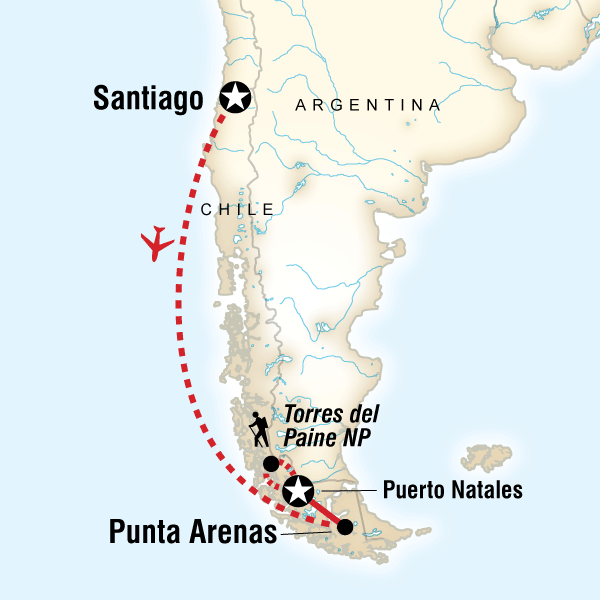

Torres del Paine National Park is a national park encompassing mountains, glaciers, lakes, and rivers in southern Chilean Patagonia.

Location of Torres del Paine in Chile
Getting There
As you can see, Torres del Paine National Park is very remote. Most indivdiuals traveling within Chile, fly into Punta Arenas.
You can then take a bus to Puerto Natales and eventually get dropped off at the Torres del Paine National Park entrace.
Landscape
The photos below show some of the varying landscapes within the park.
Taking a break to enjoy the viewView of Torres del Paine reflected in Lago Amarga
Weather
The weather is as variable as the landscape.
Torres del Paine is notorious for rapidly changing weather conditions, including strong winds.
The best time of year to visit is during their summer months, which is between December and April.
Windswept Tree
With the ever present chance for rain, there is equal chance
of seeing a rainbow. We were lucky enough to catch a glimpse early one morning.